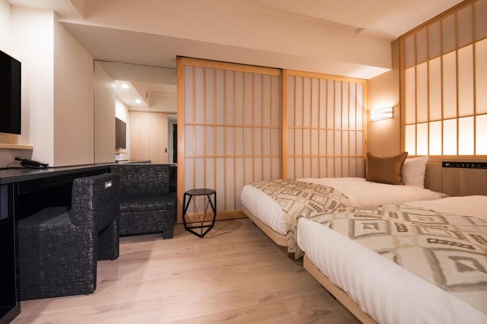
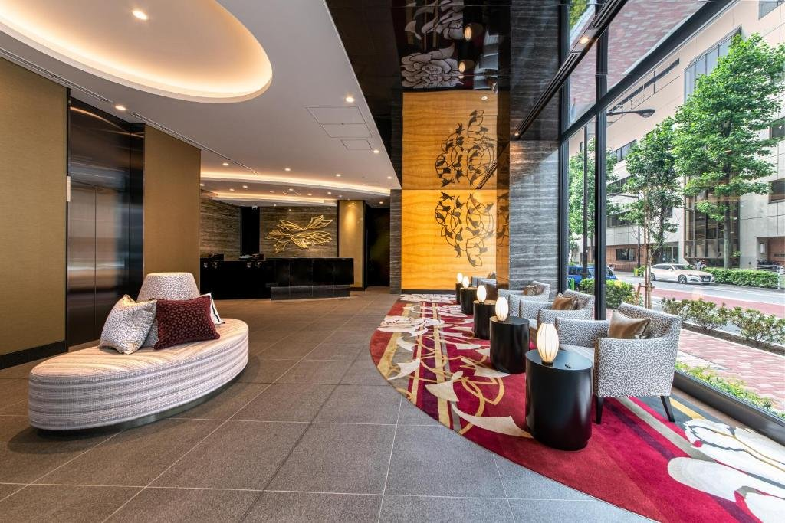

FIG. 01銀座四丁目的夜晚
DAY01
11.16 一
抵達東京Arrival in Tokyo
晚上抵達成田，司機直接送到銀座的飯店。今天只有交通，吃點東西就早點休息。
預估氣溫 東京・例年 11 月中旬 晚上約 12 度
17° / 10°
穿搭 長袖加薄外套。機上冷氣強，外套放隨身包。
今日行程
Schedule- 15:20
BR196 桃園起飛
記得把入境 QR Code先存好。
- 19:20
抵達成田 第 1 航廈
入境、領行李。
- 20:30
與接送司機會合預約接送
出境大廳會合，車程約 1 小時 15 分。
- 21:45
入住 Hotel Vista 銀座
築地 4-3-9，東銀座站 6 號出口步行約 3 分。
- 晚上
銀座宵夜自由
拉麵、居酒屋或便利商店，看大家體力。
今晚住這裡
Stay · 1 晚

Hotel Vista 銀座
夾在築地和銀座之間的城市飯店，從東銀座站 6 號出口走 3 分鐘就到。客房走和風路線，木頭色調配上紙門，床邊的大窗看得到東京的夜景，第一晚落地後剛好可以好好睡一覺。
隔天早上把大行李寄放在櫃台，空手走去築地吃早餐，回來再取車載行李。
- 入住
- 11.16 約 21:45 抵達
- 地址
- 〒104-0045 東京都中央区築地 4-3-9
- 交通
- 東銀座站 6 號出口步行約 3 分
- 電話
- 03-6260-6166
提醒
- 入境前先在 Visit Japan Web 完成線上申報，截圖 QR Code。
- 司機會在出境大廳舉牌等候，到了先傳訊息。
NEXT · DAY 2築地到修善寺市場早餐、取車、溫泉街
秋日賞楓行 Day 1 / 6